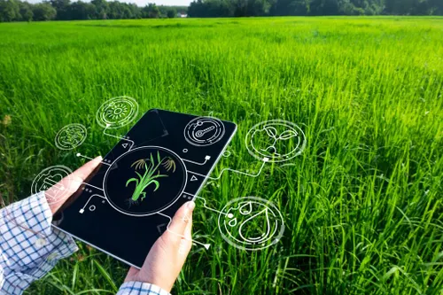

O que será a Feira Tecnológica do IFPR Campus Capanema?
O objetivo será integrar estudantes e professores de todos os cursos em diversas atividades, a fim de promover o estudo teórico e prático de tecnologias digitais, e como ter um estudo dessas tecnologias vai formar diferenciais dentro dos vários mercados.
Imagem ilustrativa
Como funcionaram as atividades e aulas?
Teremos as ilustres presenças de dois professores que atuam nas áreas de Agropecuária e Cooperativismo, mas que atuam na área de software e desenvolvimento de IA's. Isto diz tudo sobre a integração. Esperamos que todos saiam deste grande dia com belos conhecimentos!

Imagem Ilustrativa
2- Programação
Palestra: Influência da IA no mercado a Agropecuária.
A palestra será dirigida pelo professor Carlos Augusto, onde o mesmo, que atua desenvolvendo IA's para o agronegócio, dissertará sobre como a inovação tecnológica neste campo pode impulsionar o mercado de forma exponencial.
Mais informaçõesCarlos Augusto é doutor em desenvolvimento de IA's
Palestra 2: Engenharia de Software e Cooperativismo: Engenharia de Software com Propósito Coletivo
O professor Jhonatan Santos, especialista em Engenharia de Software e estudioso do cooperativismo, conduzirá uma palestra sobre como a tecnologia pode ser desenvolvida com propósito coletivo. Ele abordará a Engenharia de Software aplicada a modelos cooperativos, destacando a importância da colaboração, da responsabilidade compartilhada e do desenvolvimento de soluções que beneficiem a comunidade como um todo.
Mais informaçõesO professor Jhonatan é doutor em Engenharia de Software.